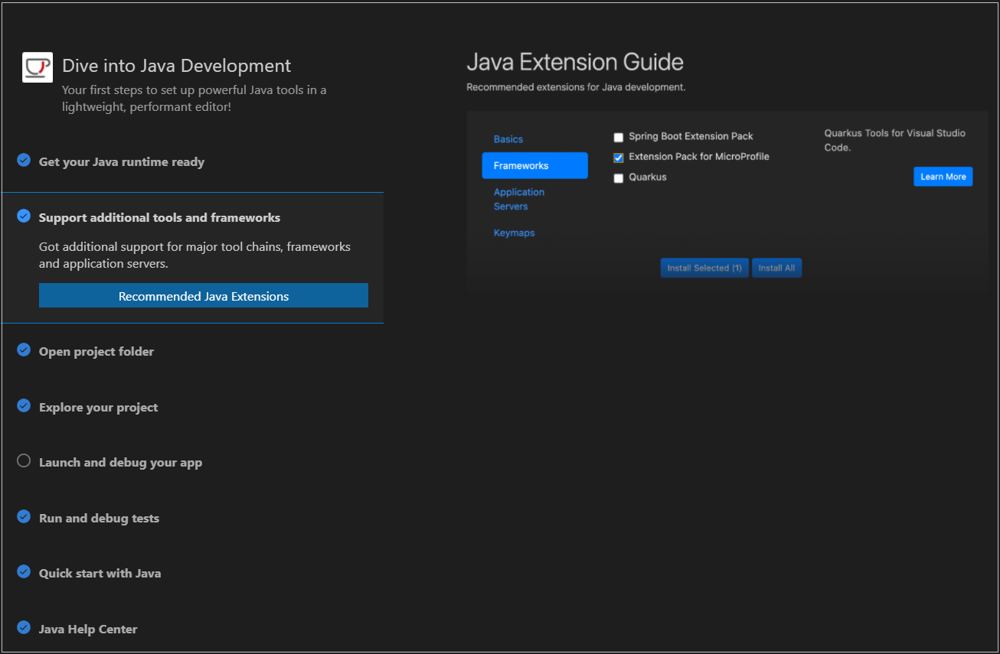
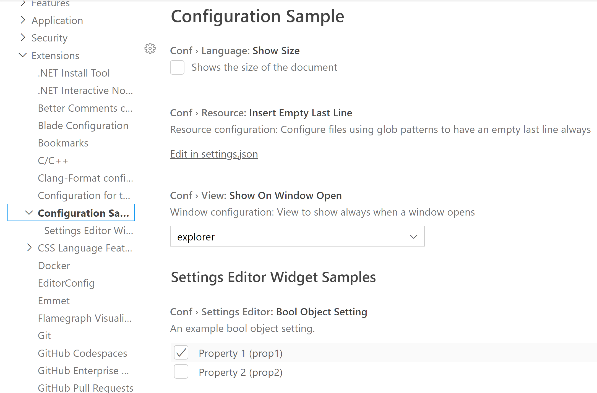

November 2021 (version 1.63)
Update 1.63.1: The update addresses these security issues.
Update 1.63.2: The update addresses these issues.
Downloads: Windows: User System Arm64 | Mac: Universal Intel silicon | Linux: deb rpm tarball Arm snap
Welcome to the November 2021 release of Visual Studio Code. There are many updates in this version that we hope you will like, some of the key highlights include:
- Marketplace theme preview - Try out Color Themes without installing them.
- Configure Problems navigation order - Go to next error or warning by severity or file position.
- Show commands in screencast mode - Display command names along with keyboard shortcuts.
- Notebook improvements - Adjust Markdown font size, better file and URL linking support.
- Invisible Unicode highlighting - Highlights invisible or confusable Unicode characters.
- TypeScript method completions - Quickly fill in interface and override methods.
- Pre-release extensions - Try out extension new features and fixes early.
- New Java welcome experience - To help you configure and learn about Java in VS Code.
- More extensions for vscode.dev - Check out recent additions for VS Code for the Web.
- Work in a container on an SSH server - New Remote - SSH Reopen in Container command.
If you'd like to read these release notes online, go to Updates on code.visualstudio.com.
Watch a highlight of the new features in this version at the VS Code team's release party. You can find the recording of the event on our YouTube channel.
Insiders: Want to try new features as soon as possible? You can download the nightly Insiders build and try the latest updates as soon as they are available.
Workbench
Preview themes before installing
You can now preview themes available on the Marketplace before installing them. From the Color Themes dropdown (⌘K ⌘T (Windows, Linux Ctrl+K Ctrl+T)), select Browse Additional Color Themes to list the Marketplace themes. The VS Code UI will preview the Color Theme as you navigate the dropdown.
Press Enter on a theme entry to install the extension.
Configure Problems navigation order
You can now define the order for Go to Next Problem (⌥F8 (Windows, Linux Alt+F8)) and Go to Previous Problem (⇧⌥F8 (Windows, Linux Shift+Alt+F8)) navigation. In previous versions, the order of navigation was based on severity, going to errors first, then warnings, then the rest. The new Problems: Sort Order (problems.sortOrder) setting lets you navigate problems by either their severity or position. When using "problems.sortOrder": "position", a warning on line 5 will be shown before an error on line 13, etc.
Multiple language specific editor settings
You can now configure language specific editor settings for multiple languages at once. The following example shows how you can customize settings for javascript and typescript languages together in your settings.json file:
"[javascript][typescript]": {
"editor.maxTokenizationLineLength": 2500
}
Automatic 2x2 editor grid
A true 2x2 grid editor layout was only possible using the View: Grid Editor Layout (2x2) command. Now you can get the same layout by manually splitting editors until you reach a 2x2 grid, and the grid will automatically lock into a true 2x2 layout.
Better Escape handling in lists
Pressing Escape on lists and trees will now shrink the selection to a single element before clearing it.
Find enabled on web
The Find control is now supported inside webviews when VS Code is running in a browser (github.dev in the example below):
Due to limitations with current browser APIs, find behaves a bit differently than it does on desktop. For example, on web, VS Code can only highlight the current find result. On desktop, all results are highlighted in the current file.
Screencast mode shows command names
You can now choose to show command names as you trigger them via keyboard shortcuts in screencast mode. Use the Screencast Mode: Keyboard Shortcuts Format (screencastMode.keyboardShortcutsFormat) setting to configure this behavior.
Pre release extensions
VS Code now supports pre-release versions of extensions so you can opt in to install them and try out the latest cutting edge features from extensions. VS Code shows an additional Install Pre-Release Version option in the extension Install drop-down menu for installing the pre-release version.
Theme: GitHub Light Theme
Once installed, an indicator makes it clear if you are using the pre-release version of an extension:
Theme: GitHub Light Theme
If there is a pre-release version of an extension that you have already installed, you can easily switch to it:
Theme: GitHub Light Theme
Updated Find actions
The Find actions in the Search view now use the same style as Find actions in the editor:
Source Control
Ignore trim whitespace in quick diff
You can now configure the SCM quick diff feature displayed in the left gutter to ignore trim whitespace, using the scm.diffDecorationsIgnoreTrimWhitespace setting.
Notebooks
Adjust the font size in notebooks
The new notebook.markup.fontSize setting lets you control the font size of notebook Markdown content. The default for this setting is 120% of the current editor font size.
Syntax highlighting in Markdown cells
VS Code now supports syntax highlighting of fenced codeblocks inside Markdown cells:
File links in notebooks
Markdown inside notebooks can now link to other files in the current workspace:
Links the start with / are resolved relative to the workspace root. Links that start with ./ or just start with a filename are resolved relative to the current notebook.
Bare http(s) links notebooks
In addition, Markdown text that includes http or https is now automatically turned into a link:
This matches the behavior of other notebook renderers, such as JupyterLab.
Dynamic visibility of notebook toolbar labels
The notebook toolbar can decide if the label for an action should be visible based on the width of the editor group, by setting notebook.globalToolbarShowLabel to dynamic. It will hide labels from the right-most action groups first and then the left side ones. If the editor group is still too narrow when all labels are hidden, the actions will be moved into an overflow menu.

The other values for notebook.globalToolbarShowLabel are now always and never.
Editor
Unicode highlighting
All uncommon invisible characters in source code are now highlighted by default:
In addition, characters that can be confused with ASCII characters are also highlighted:

You can read "The Invisible JavaScript Backdoor" blog post or this University of Cambridge article for how invisible or confusable Unicode characters can be used in Unicode spoofing attacks.
Note that this feature does not detect all possible Unicode spoofing attacks, as this depends on your font and locale settings. Also, the detection of ambiguous characters is done heuristically. To be on the safe side, VS Code's Workspace Trust Restricted Mode should be used to review source code, as all non-ASCII characters are highlighted in untrusted workspaces.
The settings editor.unicodeHighlight.invisibleCharacters, editor.unicodeHighlight.ambiguousCharacters, or editor.unicodeHighlight.nonBasicASCII can be set to false to disable the corresponding feature.
Individual characters can be excluded from being highlighted and characters in comments or text with the following settings:
editor.unicodeHighlight.allowedCharacters- List of specific characters not to be highlighted.editor.unicodeHighlight.includeComments- Enable highlighting characters in comments.
In addition, Markdown documents are not highlighted by default.
Multiple hover providers
When having multiple hover providers for a document, the hover will now display as soon as one of the providers has returned a result and it will update with the rest of the providers results, as they come in:
| Before | After |
|---|---|
Tasks
automationProfile setting
The old settings terminal.integrated.automationShell.* have been deprecated and new terminal.integrated.automationProfile.* settings have been added. This allows for greater freedom in specifying properties of terminals used for tasks, including shell, icon, color, and shell argument.
gulpfile.ts support
The built-in gulp extension now supports detecting tasks from gulpfile.ts files.
NPM Scripts view improvements
The NPM scripts view shows more details about the scripts.
There is also a new setting npm.scriptExplorerExclude, which allows you to specify scripts to exclude from the NPM Scripts view.
Languages
TypeScript 4.5
VS Code now ships with TypeScript 4.5. This update brings a number of new language features, along with tooling improvements and bug fixes.
You can read more about TypeScript 4.5 on the TypeScript blog.
Method signature completions
Method signature completions let you quickly override methods and implement interface methods. With this feature, when you are inside a class body, suggestions for methods—such as those from a super class—insert the entire signature of the method when accepted:
If you're writing TypeScript, accepting the suggestion also adds all the necessary imports for types referenced in the signature.
This feature requires TypeScript 4.5 in the workspace and can be enabled/disable using typescript.suggest.classMemberSnippets.enabled and javascript.suggest.classMemberSnippets.enabled.
JSX attribute completions
When completing JSX attributes in JavaScript and TypeScript, VS Code will now automatically insert the attribute value:
The behavior of these completions can be configured using javascript.preferences.jsxAttributeCompletionStyle and typescript.preferences.jsxAttributeCompletionStyle.
Possible settings values are:
auto- Infer the attribute style based on its type. Strings useattr=""while other types useattr={}.braces- Always use braces.None- Just complete the attribute name.
Removing of semantic highlighting for older TS versions
This update removes support for semantic highlighting when using TypeScript 4.1 or older in your workspace.
TypeScript 4.2 added native support for semantic highlighting. On older versions, semantic highlighting was implemented as a TypeScript language plugin provided by VS Code. Removing the plugin reduces the amount of code to maintain and ship.
Markdown Preview custom editor
You can now use the Reopen With command to make a Markdown file be shown as a Markdown preview instead of text:
Unlike the Markdown: Open Preview command, Reopen With does not open a new editor tab, instead it changes how an already opened editor tab is displayed. Use Reopen With again to switch the file back to the default text view.
Additionally, you can now configure VS Code to automatically open any Markdown file as a preview using the workbench.editorAssociations setting:
"workbench.editorAssociations": {
"*.md": "vscode.markdown.preview.editor"
}
Markdown Preview incremental updating
The built-in Markdown preview now more intelligently updates itself as you type. Instead of replacing the entire Markdown preview document for every update, the preview now uses DOM diffing to only replace the elements in the preview document that have changed. This reduces the jittering that would sometime occur while typing.
JSON language indicator
When editing in a JSON file, there's now a language indicator {} that shows whether the content was validated against one or more JSON schemas. Hovering over the indicator shows the validation state and a link to open the schema.

JSON schema caching
JSON schemas from the schema store (json.schemastore.org) are now cached locally. This saves network bandwidth and helps when working off-line.
Emmet Remove Tag command improvement
The Emmet: Remove Tag command now removes the line with the tag, along with excess empty lines as applicable, when the tag is on its own line before the removal. It also re-indents the remaining lines properly now, when there are empty lines in between the tags to be removed.
VS Code for the Web
Azure Repos
This milestone we have partnered with the Azure DevOps engineering team to add a new keyboard shortcut to the Files hub in Azure Repos. When browsing a repository in the Files hub, you can press . to open the repository in https://vscode.dev.
We have also added a new entry point to your Azure Repos repository. You can now use the new Open Repository from Azure Repos... menu item under the Open Remote Repositories... menu item in the remote picker to connect to your Azure Repos repository from within https://vscode.dev.
Additionally, you can now open an Azure Repos repository using the legacy Azure DevOps URL format (for example, https://<org>.visualstudio.com) in vscode.dev by prefixing the URL with https://vscode.dev.
Improved Remote menu
Three additional commands now appear in the Remote menu:
- Close Remote Workspace - Change the workspace to the empty one.
- Download Visual Studio Code - Go to https://code.visualstudio.com/download.
- Go to Repository - Open the repository on the source control host website, for example https://github.com for GitHub repositories.
Contributions to extensions
Java
The Extension Pack for Java now has an in-product welcome experience to help you configure and learn about Java in VS Code. The walkthroughs cover installing the Java runtime and useful frameworks, opening and debugging your project, and running tests directly inside VS Code.

You can also check out the Java tutorials and user guides at https://code.visualstudio.com/docs/java to help get you started.
Jupyter
Performance improvements
There were a number of performance improvements made to the startup of Jupyter kernels, specifically Python. Users who have previously opened a notebook will see a 2x speedup when starting a kernel. Restarting Python kernels should also be faster.
For more details on the changes made to improve the performance, you can review the following issues:
- Support pre-warming kernels to improve startup experience of notebooks. (#7903)
- Faster activation of Python environments such as Conda. (#8342)
- Avoid starting default kernel when starting jupyter. (#8185)
- Avoid looking for IPyKernel when we've found it once before. (#8196)
- Avoid unnecessarily searching for
Jupyterpackages whenJupyterruntime isn't required to start kernels. (#8350, #8352)
Improvements in handling kernel failures
A diagnostic message along with a Quick Fix has been added to warn about the usage of !pip install when installing Python packages. The Quick Fix will help users choose the right command %pip install.
Several improvements have been made to provide better and more meaningful error messages when kernels fail to start or stop during execution. Errors are now displayed in the cells outputs along with instructions on how to fix the issue. This ensures that users are aware of the issue and can fix it, in case they miss the error displayed on the bottom right of VS Code.
Python
Limited support for untrusted and virtual workspaces
The Python extension now has limited support for untrusted workspaces (see Workspace Trust) or is on a virtual file system (for example, if a remote GitHub repository is opened). Only partial IntelliSense is provided in such cases and other features of the extension are not available:
- Hover, same file completion, and completion for built-ins like print are available, but the extension is limited to only working with your currently opened files.
- For untrusted workspaces, only the Pylance language server is supported.
- For virtual workspaces, only Jedi and Pylance are supported.
The language item in Status bar is updated to indicate these situations:
Module rename refactoring
You can now more easily rename modules with the Python and Pylance extensions. Once you rename a Python module, you'll be prompted to choose whether you'd like to change all imports and references throughout your code. If you're not sure, you can first preview what the changes will look like before you make the decision. Once you're confident, you can select Apply Refactoring or Discard Refactoring to not have the proposed changes applied.

Remote Development
Work continues on the Remote Development extensions, which allow you to use a container, remote machine, or the Windows Subsystem for Linux (WSL) as a full-featured development environment.
Feature highlights in 1.63 include:
- You can now open a folder in a container when working on an SSH server with the Reopen in Container command.
- Improved forwarded port security avoids unsafe ports.
- Configurable WSL connection method lets you use
wsl.exeor a socket connection to talk to the server. - Advanced container configuration videos covering how to change the default location of your project and improve performance on Windows.
You can learn about new extension features and bug fixes in the Remote Development release notes.
GitHub Pull Requests and Issues
Work continues on the GitHub Pull Requests and Issues extension, which allows you to work on, create, and manage pull requests and issues. Check out the changelog for the 0.34.0 release of the extension to see the highlights.
Extension authoring
Updated API proposal structure
We have changed how API proposals are managed. Before, there was a single file that contained all proposals, vscode.proposed.d.ts. This file had grown and it was hard to tell what proposals an extension was using and if a certain proposal was already in the stable API. There is now a file per proposal.
For example:
vscode.proposed.languageStatus.d.ts- The language status item proposal.vscode.proposed.tabs.d.ts- The editor tabs and tab groups proposed API.
Each proposal has a unique name and extensions wanting to use a proposed API need to list those names in their package.json. The enableProposedApi property in package.json is replaced by the new enabledApiProposals, which is a string array of proposal names and has IntelliSense and validation support.
The updated flow for API proposals should be like this:
- Find a proposal that you want to try and add its name to
package.json#enabledApiProposals. - Use the latest vscode-dts and run
vscode-dts dev. It will download the correspondingd.tsfiles into your workspace. - You can now program against the proposal.
A detailed migration guide and sample migrations can be found in issue #136964. Also note that the restrictions around proposed API usages haven't changed. Extensions using a proposed API cannot be published and cannot be used as-is.
Quick Pick API improvements
This iteration, we are finalizing a couple of APIs for the QuickPick in VS Code.
QuickPickItem inline buttons
Being able to provide rich input experiences is a goal of our extension API and using the familiarity of VS Code's Quick Pick allows for powerful yet simple UI flows. One addition is that extensions can now add buttons to individual QuickPickItems.

Clicking on a button triggers the onDidTriggerItemButton event that exists on a QuickPick object. We look forward to seeing how you use these buttons in your extensions.
Ability to keep scroll position when updating items
Along with the ability to add buttons to QuickPickItems, you may also want to keep the scroll position when updating the items. This is a common use case for extensions who want to:
- Implement a "remove this item from the list" (for example, Ctrl/Cmd + P
xQuickPickItemButton). - Implement a "toggle this item in some way" (such as an "Insert Snippet" command).
- Asynchronously loading items in the Quick Pick.
The keepScrollPosition property on the QuickPick object that comes back from window.createQuickPick() allows you to control whether or not the scroll position (cursorTop) in the Quick Pick moves back to the top of the list.
Authentication API improvements
This iteration, we are finalizing several APIs related to authentication in VS Code.
Force the creation of a new session
Sometimes, when you get a session using authentication.getSession(), it may be valid for some resources but not valid for others, and by going through the sign-in flow again, this situation can be fixed.
An example is GitHub Single Sign On's Security Assertion Markup Language (SAML) support. By default, a token generated for you with repo scope will have the ability to access your own personal repositories. However, if you are in an organization with GitHub's Single Sign On turned on, you will have to explicitly grant a session the ability to access repositories in that organization.
In this example, the GitHub Authentication provider won't know the difference between a token that is properly SAML'd for what you're trying to access or not and so to rectify that behavior, you can now force the creation of a new session.
AuthenticationGetSessionOptions now has a forceNewSession property that lets you ask the user to sign in again. If you set this to true, the user will see:
You can also specify an object with a detail string, if you want to show a more descriptive message to the user.
Silently retrieve a session if an extension has one
A common pattern we've seen is that some extensions, when they activate, will check to see if they have an authentication session available. If so, they will use it to pre-load data and do other tasks ahead of time to speed up performance later on. The downside of this was that if a user hasn't given that extension access to an authentication session, a badge would be displayed on the account menu and an item in the menu will be added asking the user to sign in.
This is fine for some cases, but in others it's not desirable and clutters the screen for the user. To help with this, there is a new property on AuthenticationGetSessionOptions called silent, which lets you ask for a session without showing any indication that the extension asked for it. That way, the extension can do what it wants if it has the ability to get a session, but if it doesn't, it doesn't pester the user.
Note: This API will only return an authenticated session if the extension has already been granted access to the session in the past (in other words, it's a "trusted extension"). An extension will never be given a session that the user didn't consent to.
Settings editor improvements
Ordered settings
Individual settings can now be ordered with the order field. Ordered settings always come before unordered ones within the same category, and the ordering is relative.
Ungrouped category support
Settings can also be grouped under the main extension header instead of a specific category. To do that, set the category title of one of the categories to be the same as the extension display name.
Notice in the example below that the Conf > Language: Show Size setting is directly under the Configuration Sample header.

Support for number and integer objects
Objects with non-nullable number/integer values are now supported in the Settings editor.
New type signature for executeCommand
In previous versions of VS Code, vscode.commands.executeCommand was typed to always return a promise of a potentially undefined value:
export function executeCommand<T>(command: string, ...rest: any[]): Thenable<T | undefined>;
However, not all commands can return undefined. For example, commands that return an array of items usually return an empty array instead of undefined if there are no results. In these cases, you had to use an ugly cast or add unnecessary checks to write type correct code.
To fix this, we've updated the typings for executeCommand to be more explicit:
export function executeCommand<T = unknown>(command: string, ...rest: any[]): Thenable<T>;
This means that if a command can return undefined, you must explicitly pass in | undefined as part of the type parameter:
vscode.commands.executeCommand<vscode.CallHierarchyItem | undefined>('vscode.prepareCallHierarchy', ...);
This change only effects the typings of executeCommand and does not change the behavior of this function.
Updating vscode.d.ts for exactOptionalPropertyTypes
We've updated the typings in vscode.d.ts to better support TypeScript's exactOptionalPropertyTypes strictness option. This work included:
- Clarifying which optional properties can be assigned
undefined. - Being more consistent in how we use
?versus| undefined.
If you are using exactOptionalPropertyTypes with your extension, please let us know if you run into any issues with the vscode.d.ts typings.
HTML custom data from URIs
Custom data allows users and extensions to extend the HTML language support with new HTML tags and attributes.
In this release, the HTML custom data contribution also accepts document URIs. You can use this to provide the custom data at runtime through a document from a TextDocumentContentProvider.
Configuration defaults overrides
You can now override defaults of other registered configurations through configurationDefaults contribution point in package.json. For example, the following snippet overrides the default behavior of files.autoSave setting to AutoSave files on focus change.
"configurationDefaults": {
"files.autoSave": "onFocusChange"
}
Note: Configurations with application or machine scopes cannot be overridden.
Replace content in Output channel
In this milestone, a new replace API on the OutputChannel object can replace the content in the output channel.
/**
* Replaces all output from the channel with the given value.
*
* @param value A string, falsy values will not be printed.
*/
replace(value: string): void;
Timeout of workspaceContains
When using a workspaceContains: activation event with a glob pattern, VS Code starts a file name search in the workspace, looking for a file name that matches the provided glob pattern. As soon as a matching file name is found, the extension is activated. If no matching file names are found within 7 seconds, VS Code will now cancel the search and the extension will not be activated.
Publishing pre-release extensions
VS Code now supports extension authors publishing pre-releases of their extensions through vsce by passing --pre-release flag. This means you can make your latest features available to users who chose to install pre-releases and get early feedback before the official extension release.
vsce publish --pre-release
The VS Code Marketplace only supports major.minor.patch for extension versions and does not yet support semver pre-release tags. We therefore recommend that extensions use major.EVEN_NUMBER.patch for release versions and major.ODD_NUMBER.patch for pre-release versions. For example: 0.2.* for release and 0.3.* for pre-release. VS Code will auto update extensions to the highest version available, so even if a user opted into a pre-release version, once there is an extension released with a higher version, that user will be updated to the released version.
More information about pre-release extensions can be found in the Pre-release Extensions topic.
Language Server Protocol
A new next version of the Language Server Protocol, together with the corresponding npm modules, has been published. Besides various minor improvements, the new version contains a proposed implementation for inline values.
Debug Adapter Protocol
New important category for the Output event
The Output event of the Debug Adapter Protocol is used to send the stdout and stderr streams of the debuggee as well as informational messages from the debugger to the Debug Console. This stream of messages can be a lot for a user to process and critical things can go unnoticed. For this reason, a new category important was added to the Output event, which can be used by a debug adapter to display critical messages that need to stand out and not get overlooked by the user. The important category is a hint for the client to show important information in a highly visible UI, for example as a popup notification. Since this category is a hint, clients might ignore the hint and assume the default category (console ).
Clarifications and improvements for the execution control requests
Previously the Debug Adapter Protocol specified that all "execution control" requests (continue, next, stepIn, stepOut, stepBack, reverseContinue) operate on a single thread but that an implementation could decide to ignore the thread argument and operate on all threads. Since this fuzzy "single thread" semantics is not really useful, typically debug adapters implement something more useful:
- "step" requests that step the current thread while allowing others threads to run freely by resuming them.
- "continue" requests that resume all threads.
Since the current spec is impractical for execution control requests, we have changed the spec for all execution control requests (continue, next, stepIn, stepOut, stepBack, reverseContinue) so that it matches what is typically implemented.
In addition, some debug adapters have a need for an "alternative semantic" where step or continue operate only on the current thread but keep all other threads in the suspended state. For this "alternative behavior", a new optional singleThread property has been added to all execution control requests. A corresponding new capability supportsSingleThreadExecutionRequests must be used by a debug adapter to indicate to the client that the execution control requests support the singleThread property.
Proposed extension APIs
Every milestone comes with new proposed APIs and extension authors can try them out. As always, we want your feedback. Here are the steps to try out a proposed API:
- Find a proposal that you want to try and add its name to
package.json#enabledApiProposals. - Use the latest vscode-dts and run
vscode-dts dev. It will download the correspondingd.tsfiles into your workspace. - You can now program against the proposal.
You cannot publish an extension that uses a proposed API. There may be breaking changes in the next release and we never want to break existing extensions.
QuickPickItem separators
This iteration we are introducing the ability for extensions to add separators (also known as "categories") to a Quick Pick via a proposed API (vscode.proposed.quickPickSeparators.d.ts). This is useful for grouping items or just having a bit of space between items:
To add a separator to your existing Quick Pick, you can add a new QuickPickItem to your existing list of items but specify the kind property on the QuickPickItem and set it to QuickPickItemKind.Separator.
In the example above, you would add the following object to your list of items:
{
label: 'APIs',
kind: QuickPickItemKind.Separator
}
If you don't specify a kind property, or you set it to QuickPickItemKind.Default, the item will be treated as a normal QuickPickItem.
You can provide feedback about this API in issue #74967.
Notable fixes
- 5989 Unable to run any tasks on a remote windows machine using openssh
- 45629 Google Japanese Input (IME) on Mac - Suggestions Overlap w/ Text
- 131345 Default settings deprecation warning with
\nbreaks the json - 133521 Asking for nvm to be installed, when it is already
- 133623 debug toolbar does not update if focused thread no longer exists
- 134254 Cannot type Korean. Splitted self or missing
- 134429 Zlib error: invalid distance too far back
- 135838 I cannot save a file when there is another file with longer name
- 136684 Call stack items aren't opening tabs with correct contents
- 137012 Emmet does not work in js/jsx files for VS Code 1.62.2(Universal)
- 138153 Perf: _removePropertiesWithPossibleUserInfo is ~10% of the cost of loading a renderer
- 138302 Perf: Update editor configuration only after extensions are registered
- 138517 vscode.dev can't switch branches in private repositories
Thank you
Last but certainly not least, a big Thank You to the contributors of VS Code.
Web extensions
Extension authors for enabling extensions that run code as web extensions (the list below is between November 2 and December 6):
- Material Icon Theme (lit fork) (abschill)
- Base64 Utils (Adrientoub)
- LS-Club (AdvantiSS)
- Apollo Workbench (Apollo GraphQL)
- A-SOUL 鼓励师 (AS042971)
- Django (Baptiste Darthenay)
- TOML Language Support (be5invis)
- Simple React Snippets (Burke Holland)
- MASM/TASM (clcxsrolau)
- Tree (CTC)
- Tree (Insiders) (CTC)
- Structured Data Templates (Daniel G. Taylor)
- Notepad Notebook (Devon7925)
- Of course I still log you (Diego Perez)
- Hello, DotNetJS! (Elringus)
- Excel Viewer (GrapeCity)
- FTL XML (hahn-kev)
- ECL Language (HPCC Systems)
- Graphviz Previewer Web (IJMacD)
- ImJoy (ImJoy Team)
- InterSystems ObjectScript (InterSystems Developer Community)
- Shader Toy (Web) (Jackson Kearl)
- Dark Light (Jakka Prihatna)
- React Native Mockups Explorer (jamsch)
- Quote List (jmviz)
- Vue Language Features (Volar) (Johnson Chu)
- Code Runner for Web (Jun Han)
- GZDoom ZScript (kaptainmicila)
- nginx.conf hint (Liu Yue)
- Loadmill (Loadmill)
- UUID Generator (ludwhe)
- CSS Formatter (Martin Aeschlimann)
- SnowScript JS (Mauricio Rojas)
- HLASM Browser dev (mbali)
- Template String Converter (meganrogge)
- Micro Focus COBOL (Micro Focus)
- Micro Focus Enterprise (Micro Focus)
- Cursor Align (Mike Moore)
- Cursor Trim (Mike Moore)
- Multi-Cursor Search (Mike Moore)
- numeric (neal.bkn)
- Toast (Nick Bradley)
- steris (numso)
- N/A (Orta)
- Wurst language support (peterzeller)
- ShowFlags (PEW's Corner)
- Folder Archiver (Philip Damianik)
- ZIP archive type (Philip Damianik)
- Open In Webview Web Extension (Project μ)
- Replace On (rioj7)
- Select By (rioj7)
- Powercursor (Rishov Sarkar)
- BrightScript Language (RokuCommunity)
- Script Assets (Saige)
- LinkMe (saswatbh)
- Drawing Editor (Seflless)
- Azure ML Remote Web (sevillal)
- vscode-cml (sevillal)
- Reflow Paragraph (Stephen Sigwart)
- Neon Dark Theme (Sudhan)
- Japanese Word Handler (Suguru Yamamoto)
- tldraw (tldraw)
- vscodevim-sneak-fork (vscodevim-sneak-fork)
- Expression2-LS (Vurv78)
- Weigl WEM | Script (Weigl Control LLC)
- GreyScript (WyattL)
- mplstyle (Matplotlib) (yy0931)
- OverPy (Zezombye)
- COBOL Folding (zokugun)
- Explicit Folding (zokugun)
- Zokugun Themes (zokugun)
Issue tracking
Contributions to our issue tracking:
- John Murray (@gjsjohnmurray)
- Andrii Dieiev (@IllusionMH)
- CodeCrazy-ywt (@CodeCrazy-ywt)
- Simon Chan (@yume-chan)
- ArturoDent (@ArturoDent)
- Lemmingh (@Lemmingh)
Pull requests
Contributions to vscode:
- @adaex (Aex): Update to latest seti-ui icon theme PR #136375
- @alex-brs: build/npm/preinstall: fix error message for node version PR #136794
- @filiptronicek (Filip Troníček): Rename arg
connectionTokentoconnection-tokenPR #136620 - @gjsjohnmurray (John Murray)
- Add progress indicator to SCM in activity bar while QuickDiff is preparing PR #136969
- Word missing from setting description (fix #137027) PR #137028
- Avoid conflicting scopes and commandIds in quiet logins from Accounts (fix #137601) PR #137613
- @grandeljay (Jay): Remove brackets from PHP statements PR #137447
- @Gvozd (Gvozd): 133348 fix oom when search opened in editor PR #136554
- @jeanp413 (Jean Pierre)
- Fixes remote terminal error: Command $setUnicodeVersion not found PR #136171
- Fixes remote terminal title doesn't get restored on reload PR #136176
- Fixes error: can't run recursive splices when renaming a terminal tab PR #136177
- Fixes missing files when manually building vscode server PR #137570
- @jherchen (Johannes Herchen): fix preinstall script PR #136638
- @JustinGrote (Justin Grote): Correction booleanRegex to properly match only 'true' and 'false' PR #137822
- @jzyrobert (Robert Jin): Update html-language-features documentation and tasks to yarn PR #136543
- @laurentlb (Laurent Le Brun): Make 'expandLineSelection' a proper action. PR #135917
- @MalikIdreesHasanKhan (Malik Idrees Hasan Khan): Fixed typos. PR #135729
- @mamphis (Mattis Wacker): Fix missing active debug line + breakpoint glyph PR #137471
- @mkantor (Matt Kantor): Fix a few typos in doc comments PR #137810
- @orange4glace: #fix: 108459 PR #108666
- @parched (James Duley): Fix grammar in task configuration error message. PR #137898
- @pdrgds (Pedro Guedes): fix #131458 PR #136625
- @PEZ (Peter Strömberg)
- Add option: include command in screencast overlay PR #126742
- Honor setting show only shortcut keys PR #136251
- @pohzipohzi (Zi How Poh): add options for jumping to next/previous problem PR #135736
- @Pranomvignesh (Pranom Vignesh): Fix keybindings title PR #123071
- @rudavko (Andrii): Remove code duplication by using existing utils function PR #137016
- @RyanAfrish7 (Afrish Khan S): Change img hrefs in markdown from file to vscode-file PR #136687
- @SeriousBug (Kaan Genç): Allow extensions to disable built-in markdown preview button PR #136273
- @sijakret: html-language-features: text document provider support for customData.html PR #137557
- @smcenlly (Simon McEnlly): output channel: new replaceAll API to improve output channel rendering PR #136402
- @suzmue (Suzy Mueller): clear focused thread if it does not exist PR #133637
Contributions to vscode-codicons:
- @Profesor08: Added
newlineicon PR #91
Contributions to vscode-css-languageservice:
- @avigoldman (Avi Goldman): Respect
kindproperty PR #254
Contributions to vscode-eslint:
- @asingh04 (Abhishek Singh): Handle preexisting disable rule comments PR #1261
Contributions to vscode-extension-samples:
Contributions to vscode-html-languageservice:
- @gustavnikolaj (Gustav Nikolaj): Trigger completion in all src and href attributes PR #117
- @jzyrobert (Robert Jin): Add auto completion for attribute tags PR #116
Contributions to vscode-json-languageservice:
- @gjsjohnmurray (John Murray): validate hostname, ipv4 and ipv6 formats (#_100) PR #118
- @mati-o (Mati O): Fix $ref to $id PR #107
- @Relequestual (Ben Hutton): Say JSON Schema draft 2020-12 is not yet supported PR #117
Contributions to vscode-languageserver-node:
- @CodingDoll: correct engines field node 14+ PR #862
- @fvclaus: Location of SymbolInformation gets lost when range is not defined PR #849
- @hamirmahal (Hamir Mahal)
- @robertoaloi (Roberto Aloi): Fix typo in error message PR #866
Contributions to vscode-pull-request-github:
- @38elements (38elements)
- @burkeholland (Burke Holland): Opening a gist repository gives a fetch error PR #2933
- @emtei (Mateusz Stopka): Do not activate review mode for closed or merged PR PR #3021
- @taisph (Tais P. Hansen): Fix generated branch name requiring quotes in bash PR #3084
Contributions to vscode-vsce:
- @microhobby (Matheus Castello): Add
libsecrettoDockerfileand mention the dependency onREADMEPR #646
Contributions to language-server-protocol:
- @doriath (Tomasz Zurkowski): Clarify responses to rename request. PR #616
- @yxrkt: ResponseMessage.result can be an array type PR #1012
Contributions to monaco-editor:
- @activeguild (j1ngzoue): Add 'browser-ems-vite-react' sample PR #2767
- @emojiiii (C.Y.Kun): Fix some errors on the website playground PR #2779
- @MasterOdin (Matthew Peveler)
- @milahu: fix link to monaco.d.ts PR #2769
- @Pranomvignesh (Pranom Vignesh): Semantic Tokens Provider Sample is broken in docs PR #2764
- @rramo012 (Rafael Ramos): Fixing the documentation links PR #2748